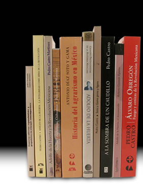

- Inicio
- Publicaciones
- Álvaro Obregón fuego y cenizas de la Revolución Mexicana
- Adolfo de la Huerta El desconocido de Roberto Guzmán Esparza
- A la Sombra de un Caudillovida y muerte del general Francisco R. Serrano
- Soto y Gamagenio y figura
- Adolfo de la Huerta Serie Grandes Protagonistas de la Historia Mexicana
- Historia del Agrarismo en México
- Ciudad Cuauhtémoc, Chihuahuacrónica de su fundación
- Adolfo de la Huerta: la integridad como arma de la revolución
- Adolfo de la Huerta y la Revolución Mexicana
- Fronteras Abiertasgeopolítica y expansionismo en Brasil contemporáneo
- Currículum

Pedro Castro
pedrocastro3131@gmail.com
- Lugar y fecha de nacimiento
- Cd. Cuauhtémoc, Chih., 16 de junio de 1952
Experiencia Académica
- 1981 a la fecha
- Profesor-Investigador de Tiempo Completo, por oposición.
Categoría Titular C, en la Unidad Iztapalapa de la Universidad Autónoma Metropolitana.
Área de Ciencia Política.
Responsable de las materias: Análisis de las Relaciones Internacionales I y II.
He impartido cursos sobre historia del sistema político mexicano. - Principales líneas de investigación
- Historia Política de México, biografías políticas, procesos políticos de México y de su política exterior.
Educación
- Estudios Realizados
- Facultad de Filosofía y Letras.
Universidad Nacional Autónoma de México (1994-1998).
Doctor en Historia (Mención Honorífica) - The London School of Economics and Political Science.
University of London (1983-1985).
M.A. en Estudios Latinoamericanos - El Colegio de México. Centro de Estudios Internacionales (1971-1975).
Licenciado en Relaciones Internacionales - Becas y Premios
- Beca para estudiar la licenciatura en El Colegio de México durante cuatro años
- Beca del Consejo Británico para estudiar la maestría en la Gran Bretaña
- Becario de los Faculty Research y Faculty Enrichment Programs para realizar programas de estudios e investigación en los campos de la política y economía del Canadá contemporáneo
- Becario del Fondo de Intercambio Académico, A. C., y la Universidad de Oxford, realizar una estancia de investigación en la Gran Bretaña, durante seis meses.
- Becario de la Bolsa C. B. Smith Sr. de la Universidad de Austin en Texas, para realizar una estancia de investigación en este lugar durante dos semanas
- Segundo Premio en el Concurso "¿Qué Hacer en América Latina?", organizado por Siglo XXI Editores. Abril de 1980
- Primer Premio de Ensayo sobre América Latina para 1980 en el concurso anual de la revista Plural. Octubre de 1980
- Mención Honorífica en el concurso Salvador Azuela 1990. Instituto de Estudios Históricos de la Revolución Mexicana, con la biografía de Adolfo de la Huerta
- Fondo Nacional para la Cultura y las Artes (FONCA), patrocinio del proyecto “Ciudad Cuauhtémoc: hacendados, agraristas y menonitas en su fundación”. Marzo del 2000
- Fondo Nacional para la Cultura y las Artes (FONCA), patrocinio del proyecto “Historia del Agrarismo en México, por Antonio Díaz Soto y Gama". Octubre del 2001
- Miembro del Sistema Nacional de Investigadores (SNI), Nivel III
- Premio Francisco Javier Clavijero de Investigación, correspondiente a 2010, otorgado por el Instituto Nacional de Antropología e Historia (INAH), por el libro Álvaro Obregón: fuego y cenizas de la Revolución Mexicana.
- Idiomas
- Inglés (dominio completo)
Portugués (traducción)
Francés (traducción) - Conferencias y Congresos
- Universidad Autónoma Metropolitana, Universidad Nacional Autónoma de México, El Colegio de México y el Instituto Tecnológico Autónomo de México. Universidades de Aguascalientes, Colima, Oaxaca, Guadalajara, Querétaro, Sonora, Jalapa, Sinaloa, University of Alberta (Calgary), University of British Columbia (Vancouver), University of Winnipeg y Oxford University
Publicaciones
- Libros
- Fronteras Abiertas: geopolítica y expansionismo en Brasil contemporáneo.
México: Siglo XXI Editores. 1980.
Segunda Edición en España, 1989 - Adolfo de la Huerta: la integridad como arma de la revolución.
Universidad Autónoma Metropolitana-Iztapalapa-Siglo XXI Editores.1999 - Ciudad Cuauhtémoc, Chihuahua : crónica de su fundación.
Fondo Nacional para la Cultura y las Artes (FONCA)-Universidad Autónoma Metropolitana. 2000 - Historia del Agrarismo en México (Antonio Díaz Soto y Gama).
Prólogo, semblanza, rescate y Edición de Pedro Castro.
Fondo Nacional para la Cultura y las Artes (FONCA)-Universidad Autónoma Metropolitana Iztapalapa. 2002. - Soto y Gama: genio y figura.
Dirección de Difusión Cultural de la Universidad Autónoma Metropolitana. 2003 - Adolfo de la Huerta. Serie Grandes Protagonistas de la Historia Mexicana.
Barcelona: Editorial Planeta D’Agostini.2003 - A la Sombra de un Caudillo: vida y muerte del general Francisco R. Serrano.
México: Plaza & Janés. 2005 - Adolfo de la Huerta, el desconocido, de Roberto Guzmán Esparza.
Edición preliminar, rescate e iconografía de Pedro Castro.
Colección Los Centenarios. Universidad Autónoma Metropolitana. 2009- Álvaro Obregón: fuego y cenizas de la Revolución Mexicana.
México: Ediciones Era. 2009, 466 pp.- “Adolfo López Mateos y la Generación del 29: Vasconcelismo y autonomía universitaria”, en Rogelio Hernández Rodríguez (coord.) Adolfo López Mateos: una vida dedicada a la política, Gobierno del Estado de México. 2010 , pp. 111-140
- “La muerte de Emiliano Zapata y la construcción del mito”, en Gustavo Leyva, Brian Connaughton, Rodrigo Díaz, Néstor García Canclini, Carlos Illades. Independencia y Revolución: pasado, presente y futuro. México: Universidad Autónoma Metropolitana Iztapalapa-Fondo de Cultura Económica. 2010, pp. 537-559
- Adolfo de la Huerta y la Revolución Mexicana Premio Salvador Azuela,Instituto de Estudios Históricos de la Revolución Mexicana-Universidad Autónoma Metropolitana Iztapalapa, 1990
- Carlos A. Madrazo: el último mito político mexicano del siglo XX Planeta, 2016
- Carlos A. Madrazo: pensamiento y acción para tiempos inciertos Edición, biografía mínima de Madrazo y presentación de Pedro Castro, Bonilla Artigas Editor, 2020
- El Fabuloso Saqueo del Cenote Sagrado de Chichén Itzá Universidad Autónoma Metropolitana Iztapalapa-Tirant lo Blanch, 2016
- Le grand Cenote Sacré de Chichen Itza: Chronique d'une fabuleux pillage du patrimoine archéologique mexicain, son auteur at ses complices (Edition francaise) Amazon Books, 2018
- The Looting of the Sacred Cenote of Chichen Itza, (English edition) Amazon Books, 2019
- El Vuelo de la Utopía: Revolución y educación rural en los años del Presidente Calles (1924-1928) Agencia Promotora de Ediciones, 2014
- Álvaro Obregón: fuego y cenizas de la Revolución Mexicana.
- Coordinación de trabajos para libros y revistas
- Las Políticas Salinistas: balance a mitad de sexenio (1988-1991). México: Universidad Autónoma Metropolitana-Iztapalapa. 1993
- Dos números monográficos dedicados a política y economía de Canadá contemporáneo, en Comercio Exterior: Banco Nacional de Comercio Exterior, S. N. C. Vol. 4, nums. 1 y 2. Enero y febrero de 1994
- La Modernidad Inconclusa: visiones desde el presente mexicano. Universidad Autónoma Metropolitana. 1996
- Capítulos de libros
- “La Sociedad Internacional", en el Diccionario de Terminología Científico-Social: una aproximación crítica. Román Reyes (comp.). Universidad Complutense de Madrid: Editorial Anthropos. Barcelona. 1988
- “Iglesia y Estado en México: la era de las afinidades”, en Las políticas salinistas: balance a mitad del sexenio (1988-1991). México: Universidad Autónoma Metropolitana-Iztapalapa. 1992
“Adolfo de la Huerta”, en Will Fowler (coord.) Gobernantes Mexicanos, t. II. México: Fondo de Cultura Económica. 2008
“Adolfo de la Huerta, un político en el canto”, en 20/10 Memoria de las Revoluciones de México, n. 5, Otoño 2009
“Adolfo López Mateos y la Generación del 29: Vasconcelismo y autonomía universitaria”, en Rogelio Hernández Rodríguez (coord.) Adolfo López Mateos: una vida dedicada a la política, Gobierno del Estado de México. 2010 , pp. 111-140
“La muerte de Emiliano Zapata y la construcción del mito”, en Gustavo Leyva, Brian Connaughton, Rodrigo Díaz, Néstor García Canclini, Carlos Illades. Independencia y Revolución: pasado, presente y futuro. México: Universidad Autónoma Metropolitana Iztapalapa-Fondo de Cultura Económica. 2010, pp. 537-559
- Artículos en revistas
- "Los hidrocarburos en las relaciones entre Estados Unidos y México", Plural, n. 14, marzo de 1981
- "La crisis energética norteamericana", artículo publicado en la Revista Mexicana de Ciencias Políticas y Sociales, Facultad de Ciencias Políticas y Sociales, n. 104-105, abril-septiembre de 1981
- "El Acuerdo de Libre Comercio Estados Unidos-Canadá", publicado en Comercio Exterior: Banco Nacional de Comercio Exterior, S. N. C., v. 39, n. 4, abril de 1989.
- "Las tres fronteras", en Relaciones México-Estados Unidos. Iztapalapa: revista de ciencias sociales y humanidades. Año 9, n. 17, enero-junio de 1989
- "México a la hora de la integración", en Balance de un Sexenio 1982-1988. Iztapalapa: revista de ciencias sociales y humanidades. año 9, n. 18, julio-dic. 1989
- "México y la Política Comercial de los Estados Unidos 1982-1988", en Foro Internacional: revista del Centro de Estudios Internacionales de El Colegio de México 119, v. 30, n. 3, Enero-Marzo de 1990
- "La rebelión delahuertista: lecciones de un ensayo fallido", en Iztapalapa: revista de ciencias sociales y humanidades 19, Universidad Autónoma Metropolitana-Iztapalapa, año 10, n. 19, enero-junio de 1990
- "El CAME: ¿fin o renovación?" , en Iztapalapa: revista de ciencias sociales y humanidades, año 9, n. 19, enero-junio de 1990
- "El CAME: economía y política", en Comercio Exterior: Banco Nacional de Comercio Exterior, S: N. C., v. 40, n. 5, mayo de 1990
- "El mito racial en la guerra norteamericana contra México", en Polis 90: Anuario de Sociología, Departamento de Sociología, 1990
- "Corporativismo y representación política ante el TLC", en Polis 91: Anuario de Sociología. Departamento de Sociología, Universidad Autónoma Metropolitana-Iztapalapa, 1991
- "Andrew Jackson y la causa texana", en Secuencia: revista de historia y ciencias sociales, n. 20, Instituto Mora, mayo-agosto de 1991
- "El Tratado de Libre Comercio con Estados Unidos y Canadá", en colaboración con Gabriel Gaspar, en Andes: Quadrimestrale iscos di politica e cultura sull America Latina, n. 13, Roma. 1992
- "El petróleo de México en la coyuntura del TLC", en Iztapalapa: revista de ciencias sociales y humanidades 27, Departamento de Sociología. Universidad Autónoma Metropolitana-Iztapalapa, año 12, extraordinario de 1992
- "¿Nuevo separatismo de Quebec?" , en Foro Internacional: revista trimestral publicada por El Colegio de México, 128-129. v. 32, num. 4, abril-septiembre de 1992
- Reseña del libro Continental Divide: the values and institutions of the United States and Canada (Seymour Martin Lipset). Londres, Routledge, Chapman and Hall Inc. 1991, en Foro Internacional: revista trimestral publicada por El Colegio de México 133, v. 33, n. 3, julio-septiembre de 1993
- "Comercio e Inversiones México-Canadá: un asunto trilateral", en Comercio Exterior: Banco Nacional de Comercio Exterior, S. N. C., V. 43, núm. 5, mayo de 1993
- "El nacionalismo esteuropeo: ¿ha terminado la caída?" , en Polis 93: Anuario de Sociología. Departamento de Sociología, Universidad Autónoma Metropolitana-Iztapalapa, 1994
- "México-Estados Unidos: dos herencias coloniales", Historia y política. Iztapalapa: revista de ciencias sociales y humanidades, 32. Universidad Autónoma Metropolitana-Iztapalapa, año 14, n. 32, enero-junio de 1994
- "Relaciones México-Canadá: un asunto de seguridad nacional", en Seguridad y Soberanía Nacionales en América Latina, Sociológica: Revista del Departamento de Sociología, Universidad Autónoma Metropolitana-Azcapotzalco, año 9, n. 25, mayo-agosto de 1994
- "El Movimiento de Agua Prieta: presencias sin olvido", Estudios de Historia Moderna y Contemporánea de México, n. 17, Instituto de Investigaciones Históricas, 1996
- "México y Canadá: la búsqueda de una nueva relación", en número extraordinario de Foro Internacional: revista trimestral publicada por El Colegio de México, v. XXXIV, n. 4, octubre-diciembre 1994
- "La Intervención Olvidada: Washington en la rebelión delahuertista", en Secuencia: revista de historia y ciencias sociales, n. 34, Instituto Mora, enero-abril de 1996
- "Chiapas: las verdes frutas de la paz armada", en La Modernidad Inconclusa: visiones desde el presente mexicano, UAM-Iztapalapa, 1996
- “El convenio De la Huerta-Lamont de 1922” , Revista Economía: Teoría y Práctica, n. 7, Departamento de Economía, Universidad Autónoma Metropolitana-Azcapotzalco. primer Trimestre de 1997
- “De la Huerta y Calles: los límites políticos de la amistad” , Boletín: Fideicomiso Archivos Plutarco Elías Calles y Fernando Torreblanca, n. 23
- “Una estrategia internacional contra la Ley Helms-Burton” , Foro Internacional Centro de Estudios Internacionales de El Colegio de México, n. 148, abril de 1998
- “La Ley Helms-Burton: un obstáculo al libre comercio” , Comercio Exterior: Banco Nacional de Comercio Exterior, S. N. C., marzo de 1998
- “La Ley Helms-Burton y la extraterritorialidad de las leyes internas: elementos para su explicación” , Revista Mexicana de Política Exterior, Instituto Matías Romero de Estudios Diplomáticos, febrero de 1998
- “Adolfo de la Huerta y la última insurrección yaqui” , Estudios de Historia Moderna y Contemporánea de México, Instituto de Investigaciones Históricas UNAM, marzo de 1998
- “Veinte años después: el Senado norteamericano aprueba el tratado de límites marítimos México-Estados Unidos” , Revista Mexicana de Política Exterior Instituto Matías Romero de Estudios Diplomáticos, Secretaría de Relaciones Exteriores, abril de 1998
- “Los Tratados de Bucareli: un juego de doble banda” , en Revista Economía: Teoría y Práctica, Departamento de Economía. Universidad Autónoma Metropolitana-Azcapotzalco, Primer Trimestre de 1999
- “La muerte de Carranza; dudas y certezas” , en Boletín: Fideicomiso Plutarco Elías Calles-Fernando Torreblanca, n. 34, 2000
- “Las relaciones México-Canadá: su evolución reciente” , a publicarse en número especial de Foro Internacional: Centro de Estudios Internacionales de El Colegio de México, dedicado a la política exterior de México durante el gobierno del presidente Ernesto Zedillo
- “Antonio Díaz Soto y Gama y las vicisitudes del Partido Nacional Agrarista” , número especial (50) de la Revista Iztapalapa: División de Ciencias Sociales y Humanidades. UAM-I
- “Antonio Díaz Soto y Gama, agrarista” , número 34 de la revista Polis 2000: anuario del Departamento de Sociología. UAM-I
- “Soto y Gama: semblanza de un iconoclasta” , Vetas, El Colegio de San Luis, Enero-Abril del 2002
- “La Campaña Presidencial de 1927-28 y el ocaso del Caudillismo” , Historia Moderna y Contemporánea. Instituto de Investigaciones Históricas de la UNAM, 2002
- “Soto y Gama, rector por plebiscito” , Casa del Tiempo. Difusión Cultural de la Universidad Autónoma Metropolitana. 2003
- “Álvaro Obregón, el último caudillo” , en Polis 2004: Anuario del Departamento de Sociología. UAM-I
- “Memorias del Tren Presidencial” , Boletín Fideicomiso Archivos Plutarco Elías Calles-Fernando Torreblanca. 2003
- “The ‘return’ of the Mennonites from the Cuauhtémoc region to Canada: a perspective from Mexico” , Journal of Mennonite Studies, Vol. 22, 2004, University of Winnipeg, Canada
- “Álvaro Obregón, el último caudillo” , en Polis: Investigación y análisis sociopolítico y psicosocial , v. 2, primavera 2004
- “El general Francisco R. Serrano: una semblanza política” , en Polis: Investigación y Análisis Sociopolítico y Psicosocial, v. I, n. 2, segundo semestre del 2005
- “Prieto contra Manrique: las elecciones de San Luis Potosí de 1923” , en Vetas: Revista de El Colegio de San Luis, ns. 22-23, enero-agosto del 2006
- “Carlos A. Madrazo y la reforma imposible del PRI” , en Polis: Investigación y análisis sociopolítico y psicosocial, v. 3, n. 1, primer semestre del 2007
- “El caudillismo en América Latina ayer y hoy” , en Política y Cultura: nuevos movimientos sociales y cambios políticos en América Latina, n. 27, primavera 2007
- “El asesinato de Álvaro Obregón: las caras de un imaginario dividido” , Iztapalapa, revista de ciencias sociales y humanidades, año 27, n. 61, julio-diciembre de 2006, pp. pp. 143-168 (Publicado en el 2008).